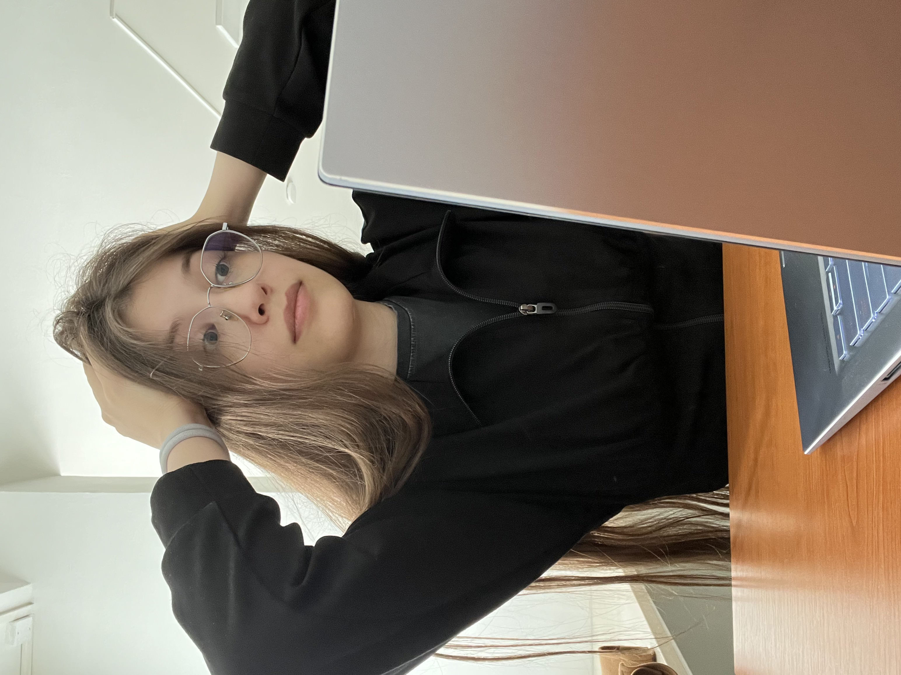

Kto som?
Ekaterina Salova - Študentka Aplikovanej informatiky
V súčasnosti som študentom 3. ročníka bakalárskeho štúdia a aktívne sa rozvíjam ako programátor. Svoje projekty a sieť kontaktov budujem cez GitHub a LinkedIn, pričom momentálne pracujem na bakalárskej práci a hľadám si prácu v odbore. Moje praktické zručnosti čoskoro preverí aj účasť na nadchádzajúcom hackathone.
Vo voľnom čase sa venujem aktivitám, ktoré rozvíjajú kreativitu a tímovú spoluprácu. S priateľmi radi hrávame kooperatívne videohry a stolovky (napríklad D&D), a taktiež radi navštevujeme kultúrne podujatia, ako bola naša nedávna návšteva výstavy modelov.
Moje predmety:
- Lineárna algebra 2 - pokročilé matice, konečné polia a kvadratické formy.
- Webové technológie 1 - tvorba moderných webov a klientskych aplikácií v HTML, CSS a JS.
- Bakalársky projekt 1 - samostatná analýza a návrh riešenia pre záverečný projekt.
- Telesná kultúra - rozvoj fyzickej kondície a zdravého životného štýlu na cvičeniach pilatesu.